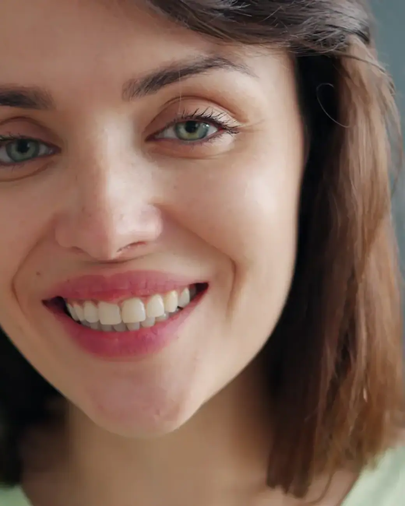
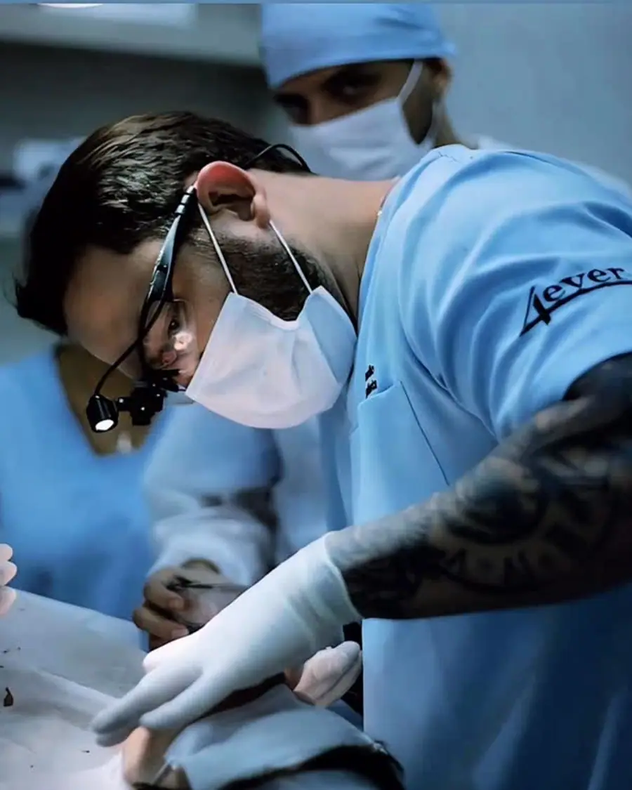
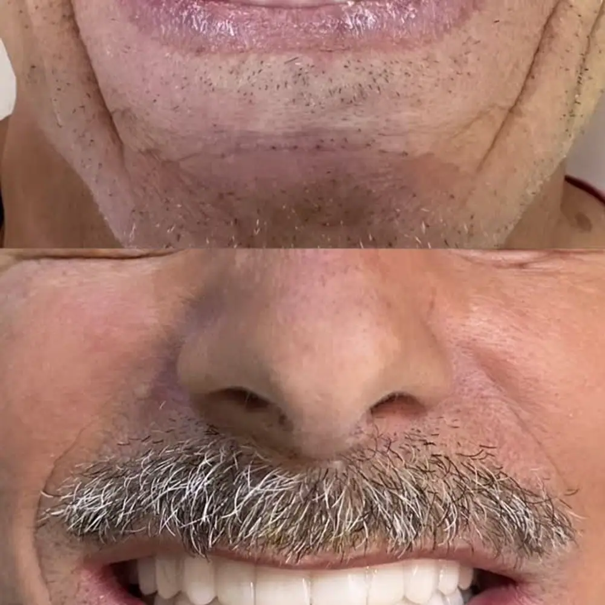
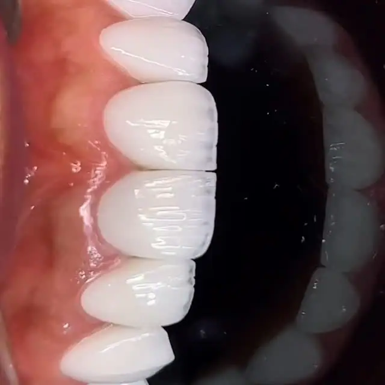
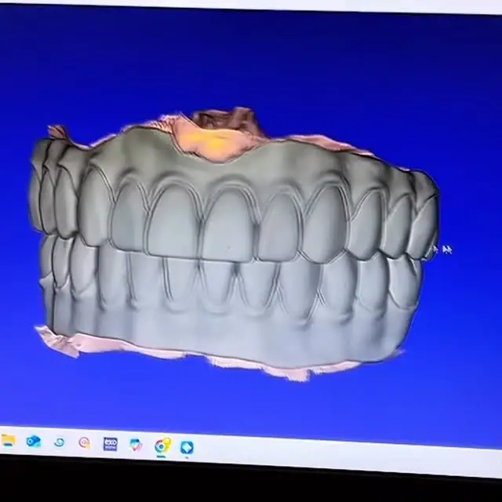
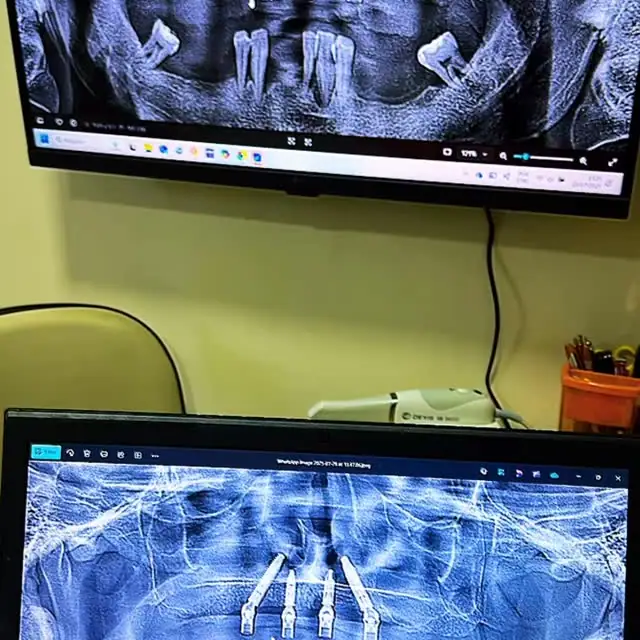

01
Implantes dentários
Reposição de dentes perdidos com implantes, devolvendo firmeza para mastigar e segurança para sorrir.
Agendar avaliaçãoClínica odontológica no Jardim Santa Tereza · Embu das Artes
Implantodontia avançada (protocolo all-on-four, implante zigomático e socket shield), próteses e clínica geral para a família toda, com preço acessível. Nota 4,8 no Google.

Implantes avançados
Escolha o tratamento e fale direto com a equipe da Sorriso de Todos. A mensagem já vai pronta no WhatsApp.
Reposição de dentes perdidos com implantes, devolvendo firmeza para mastigar e segurança para sorrir.
Agendar avaliação
Próteses fixas e removíveis para recuperar a mastigação, a fala e a confiança no sorriso.
Agendar avaliação
Consulta completa, limpeza, restaurações e prevenção. É por aqui que todo tratamento bem-feito começa.
Agendar avaliação
Ortodontia para alinhar os dentes e corrigir a mordida, com manutenção e acompanhamento até o fim.
Agendar avaliação
Facetas em resina ou porcelana para corrigir cor, forma e tamanho dos dentes com resultado natural.
Agendar avaliação
Atendimento para crianças com paciência e carinho, para criar desde cedo uma boa relação com o dentista.
Agendar avaliação
A Sorriso de Todos usa planejamento digital e radiografia panorâmica para devolver dentes fixos com segurança. As famílias elogiam a limpeza, a atenção e o preço acessível.
Sem complicação: você conversa, entende o seu caso e só então decide.
Conte o que está sentindo ou o que quer melhorar no sorriso. A equipe responde e encontra o melhor horário para você.
O dentista examina, conversa com você e explica as opções de tratamento, com o plano e as etapas por escrito.
Você decide com calma e é acompanhado em cada sessão, até o resultado final.
Segunda a sexta: 09h–19h · Sábado: 09h–16h
Veja mais no Instagram @sorrisodetodosodontologia.




Depoimentos reais de pacientes publicados no Google Maps.
“Super recomendo, eu e minha família somos bem atendidos, inclusive meus filhos ama ir ao dentista , sorriso de todos,pois eles tbm sentem segurança e confiança em fazer qualquer tratamento.”
“Profissionais altamente qualificados, recepcionista muito Humilde e competente , Doutores super profissionais, serviço totalmente qualitativo ,Resultado no final do tratamento : excelente!”
“Me encantei pela clinica desde o primeiro momento, fui super bem atendida por todos, o local é bem higienizado, preços acessíveis. Tenho total confiança no trabalho deles.”
Não achou sua dúvida? Pergunte direto para a equipe no WhatsApp.
A Sorriso de Todos fica na R. Cerqueira César, 934, Jardim Santa Tereza, em Embu das Artes (SP), CEP 06813-000. Pelo botão "Traçar rota" nesta página você abre o caminho direto no Google Maps.
A clínica atende segunda a sexta, das 09h às 19h; sábado, das 09h às 16h. Aos domingos fica fechada. O agendamento é feito pelo WhatsApp.
É só chamar no WhatsApp (11) 93064-8209 pelo botão "Agendar avaliação". A equipe responde, tira suas dúvidas e marca o melhor horário para a sua avaliação.
Implantes dentários, Próteses dentárias, Avaliação e clínico geral, Aparelho ortodôntico, Facetas e lentes de contato e odontopediatria. O tratamento indicado para você é definido na avaliação.
O procedimento é feito com anestesia local, então você não sente dor durante a cirurgia. Nos dias seguintes pode haver um leve incômodo, controlado com as orientações e a medicação indicadas pelo dentista.
Depende de quantos dentes faltam e da saúde da boca e do osso. Existem próteses removíveis, fixas e as fixas sobre implantes, como o protocolo. A indicação é feita depois da avaliação.
Para a maioria das pessoas, a cada seis meses, para limpeza e revisão. Assim os problemas são encontrados cedo, quando o tratamento é mais simples.
Depende de cada caso, mas a maioria dos tratamentos leva entre um e três anos. Na avaliação o ortodontista mostra uma estimativa para o seu sorriso.
Agende sua avaliação na Sorriso de Todos em poucos minutos pelo WhatsApp.